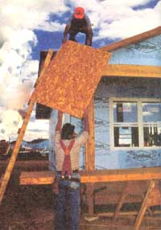
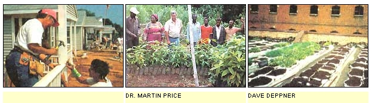
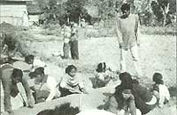
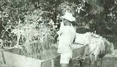
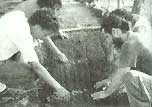
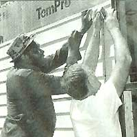
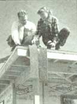
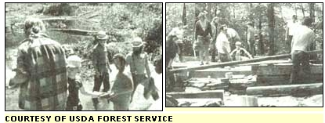

Building Futures
Agencies for homebuilding in third world countries, including Educational Concerns for Hunger Association, Conelo Project, Trees for the Future, Habitat For Humanity, Soil Conservation Society.
By Molly Miller
October/November 1995
BACKCOUNTRY SKILLS
Put a lifetime's work to a new test.
In the developed world, we have the liberty of employing principles of sustainable living as a matter of choice. But in the developing world, where population increases are exponential, people live off the grid, grow their own food, minimize waste, and simply live simply not because of a lifestyle choice but because they have to. In Guatemala, for example, about 2 million people live without electricity. The problem of accessing such lifesaving amenities as the power grid, clean and affordable housing, dependable food production, clean water, and basic comforts is often only solved through the appropriate technologies MOTHER has been shouting about for over a quarter-century. Thousands of communities throughout the developing world would profit immensely from the advice and direction of those who've made a lifetime of low-impact living. That's where you come in.
For decades, readers have been applying principles of appropriate technology, alternative building, and gardening methods in pursuit of a self-reliant, independent and affordable living situation for themselves and future generations. Voltaire advised us to cultivate our own gardens, but there's no reason you can't go further than Candide. Bill Steen, director of the Conelo project to build straw bale houses in Mexico, likes to use the Spanish verb capacitar, which literally means enabling or giving capacity to someone or something. The suggestion here is that MOTHER readers, having enabled themselves, are uniquely qualified to enable others. What follows is a short profile of a few organizations that work at home and in developing nations where MOTHER readers can put their skills to work, and maybe learn a few new ones too.
Educational Concerns for Hunger Association (ECHO), 17430 Durrance Rd., North Ft. Myers, FL 33917-2200, (813) 543-3246, fax: (813) 543-5317
A typical example of the endeavors of the scientists at ECHO is to design an effective way to keep baboons out of garden plots in Africa (just imagine those pests as slightly more nimble deer and the gardener's dilemma might be brought closer to home). ECHO is a small interdenominational Christian organization that uses 12.5 acres in North Fort Myers, FL, as a seed bank and lab for farming techniques in the developing world. It works with missionaries, development workers, and Peace Corps volunteers as an agricultural consultant. For example, according to ECHO'S newsletter. Development Notes -which is basically a how-to manual for farming and gardening in the Third World-ECHO recently sent information on making milk from the seed of the agushi melon to West Africa to an area where milk from cows, goats, or soybeans was not available. ECHO offers free seed packets for more than 70 species of tropical food plants to missionaries and other overseas workers. Volunteers work at the ECHO farm; work outside, in the office, or seed bank; one day, several times a month, or every day; or enroll in ECHO'S 15-month internship program.
Conelo Project, Bill and Athena Steen, HC 1, Box 324, Elgin, AZ 85611, (520) 455-5548. fax: (520) 455-9360.
Bill and Athena Steen, who run workshops in Arizona on construction techniques for building with straw bale houses, have been working in conjunction with the organization Save the Children on the Conelo Project in the area around Ciudad Obregon in Northern Mexico. Bill Steen says the goal of the Conelo Project is to build straw bale structures to replace the area's common shelters made of corrugated black asphalt panels, cardboard, and scrap materials. Straw is in abundance, as the area is a wheat belt. Project participants go on "work tours" to Ciudad Obregon. They learn straw bale construction techniques, pay their own expenses, and pay for the tour of nearby sites. Bill Steen explains, "Our intent in creating these work tours was to give participants the opportunity to visit places which would be of interest to tourists, but also the chance to spend time working with low-income families creating shelter and housing from surplus straw of the local region. In essence, the work tour is an education in straw bale building with an emphasis on appropriate technology, a cultural exchange, a work party to construct a small house, and a tour of Southern Sonora, Mexico." Proceeds from the tour will go to further straw-related construction in Mexico through research of regionally appropriate building techniques, the development of educational materials, and the construction of additional buildings. Straw bale work-tours in Mexico run from Nov 25-Dec 4, 1995 and Jan 19-Feb 1, 1996.
Trees for the Future, 11306 Estona
Dr., PO Box 1786, Silver Spring, MD
20915, (800) 643-0001
At the junction of Cameroon, Chad, and Nigeria in Central Africa, Lake Chad is evaporating. Volunteers for Trees for the Future are in the process of planting trees in the basin surrounded by highlands and mountains in an effort to slow the evaporation. This project, in conjunction with projects to divert water, has several goals: to suppress soil erosion, revegetate the area, reduce vulnerability to drought, and increase agricultural production and fuel-wood supplies
Trees for the Future works in rural villages throughout the developing countries of Asia, Africa, and the Americas. For example, in the Philippines, volunteers are planting trees to help against the typhoons, floods, lava, landslides, and locust infestations that have ravaged the central plains in the past. The organization runs seed production farms in six countries of Asia, Africa, and Central America. Volunteers distribute seeds, provide planting and technical assistance, run demonstration centers and seminars. Trees for the Future has neither religious or government affiliation and is supported by foundation and individual grants and donations from members. They have 6,484 members, some of them quite prominent (their Spring 1995 newsletter announced that Jane Pauley had just given $10,000 and NEC matched $2,500).
Habitat for Humanity International, 121 Habitat St., Americus, GA 31709-3498, (912) 924-6935
Aside from its affiliation with Jimmy Carter, HFHI is famous for its refusal to accept government funding, and for its tremendous success as a community service project in the U.S. HFHI believes that "God intends for everyone to have a decent durable shelter." Volunteers build affordable housing at home and abroad with an emphasis on appropriate technology and alternative building methods. (In April, HFHI completed its first straw bale house in Silver City, NM, and it often builds with mud bricks where appropriate.) Founded in 1976 by Linda and Millard Fuller, Habitat builds and rehabilitates homes with the help of the homeowners. Houses are sold at no profit to partner families, and no-interest mortgages are issued over a fixed period. A Habitat house in the United States costs home-owners an average of approximately $35,000 while houses in developing countries range from about $500-$3,000. It takes an average of three months to build a Habitat house. Habitat has projects in all 50 states and 100 projects in 40 other countries where volunteers work in what HFHI calls Global Village Work Camps consisting of 10-20 participants. Volunteers may work to raise funds in the village and pay their own travel expenses, food, lodging, and insurance.
USDA Forest Service volunteer programs. (202) 205-8333.
In 1994, 93,726 people volunteered with the Forest Service. The number of volunteers in the national forests always exceeds the number of paid employees, and they contribute millions of dollars worth of work every year. Under the United States Department of Agriculture, the Forest Service manages 192 million acres of land in 44 states, Puerto Rico, and the Virgin islands.
Volunteers receive no compensation, but if funds are available, incidental expenses, such as transportation, lodging, and subsistence, may be reimbursed. Volunteers work on a part-time, full-time, or project-by-project basis, and they may receive training if their jobs require it. People who are retired or have summers free may wish to live in a national forest while they work as a volunteer. Some typical volunteer activities include:
• maintaining and hosting campgrounds
• answering phones, greeting visitors, and answering mail at Forest Service visitor centers and ranger stations
•working with computers in Forest Service administration offices
• taking photographs
• planting trees and seeding damaged areas
• presenting environmental education programs
• building and repairing fences, nesting boxes, picnic tables, campsites, docks, and trails
• restoring damaged stream banks and burnt-over areas.
Call to find out how to get in touch with the volunteer coordinator nearest you.
Soil Conservation Service, (800) THE-SOIL
The Soil Conservation Service, a section of the United States Department of Agriculture, worked with 12,000 volunteers last year in administration, support, photography, writing, hands-on conservation work, water quality., planting, conservation education, watersheds and wetlands preservation. Volunteers work in all 50 states, and receive insurance, use of vehicles and equipment, and pre-approved reimbursement of expenses.
More Volunteer Programs
Nature Conservancy (703) 247-3721, 1815 N. Lynn St., Arlington, VA 22209
Peace Corps (800) 424-8580, 1990 K St. NW, Washington, DC 20826
Volunteers in Service to America (800) 424-8867, 1201 New York Ave. NW, Washington, DC 20036
Agency for International Development (202) 647-4000, 320 21st NW, Washington, DC 20036
National Center for Appropriate Technology (800) 346-9140, PO Box 3657, Fayetteville, AR 72702
Seeds of Change, Organic Farms and seed-house, (505) 983-8956, PO Box 15700, Santa Fe, NM 87506-5700.
 ATHENA STEEN |
 COURTESY OF HABITAT FOR HUMANITY (2) |
 Students planting seedlings in Nepal. |
|
 Moving trees |
 Seedbed prep in Honduras PHOTOS BY DAVE DEPPNER |
 RAY SCIOSCIA |
|
 HFHI volunteers in Americus, GA. JULIE LOPEZ |
 COURTESY OF USDA FOREST SERVICE |
 |